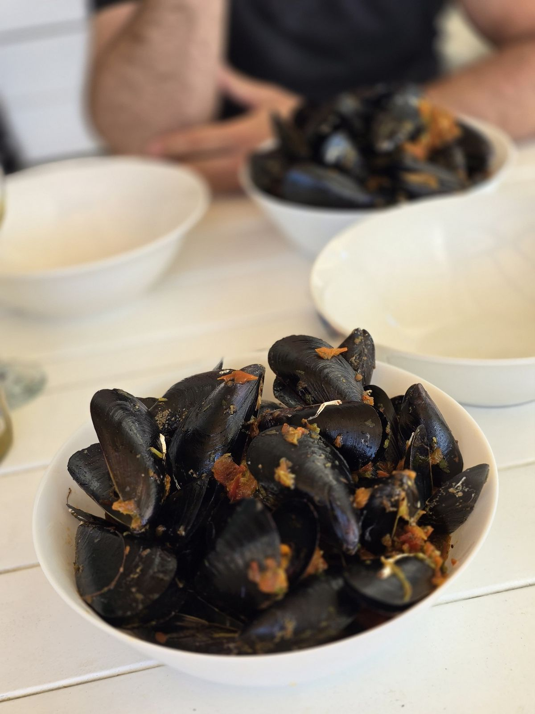
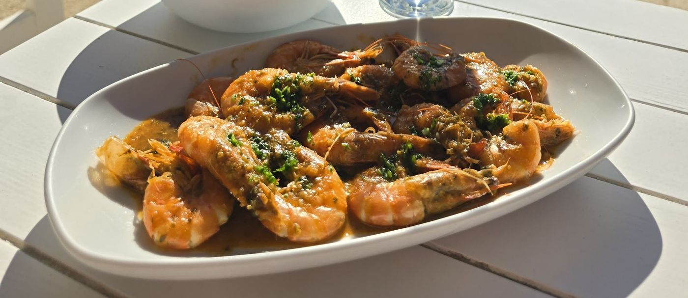
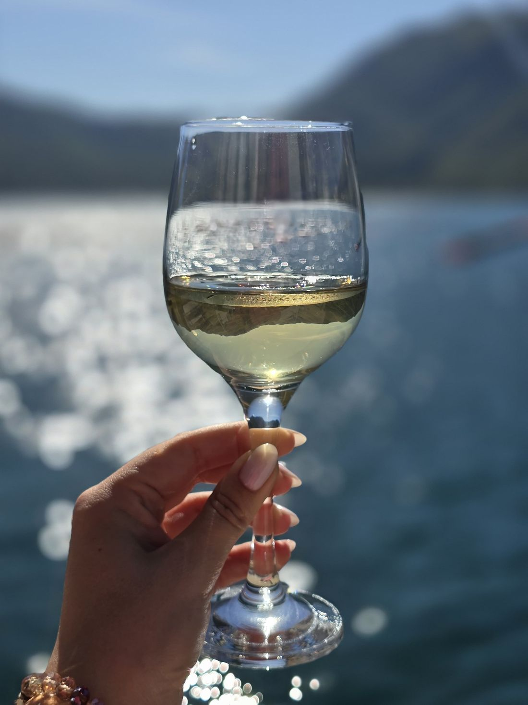
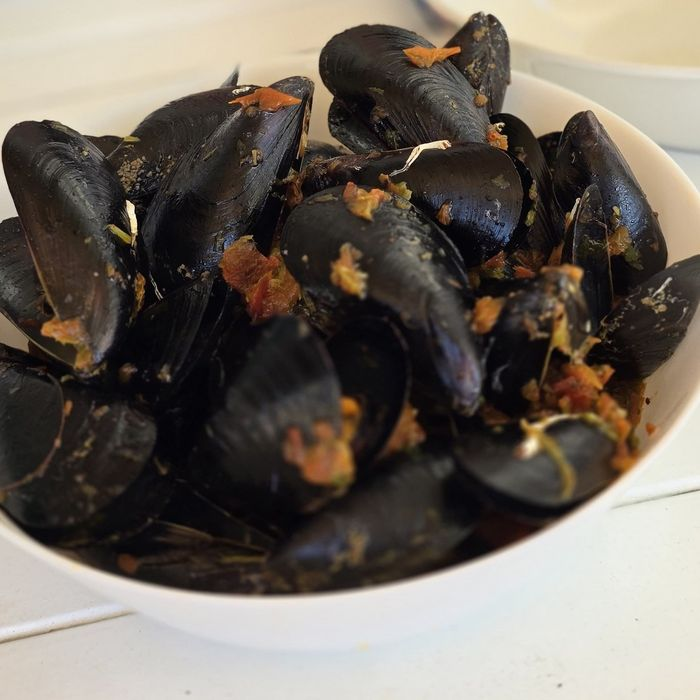
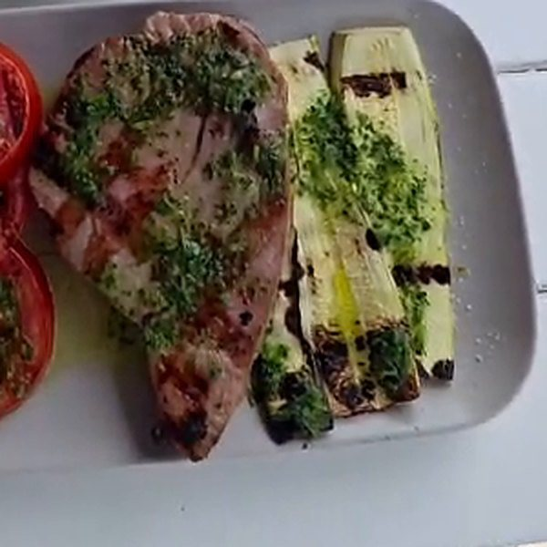
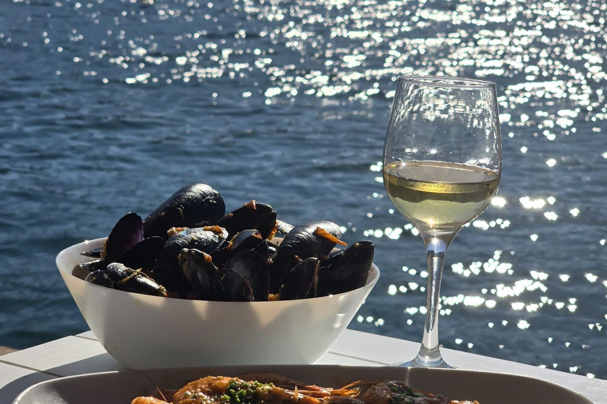
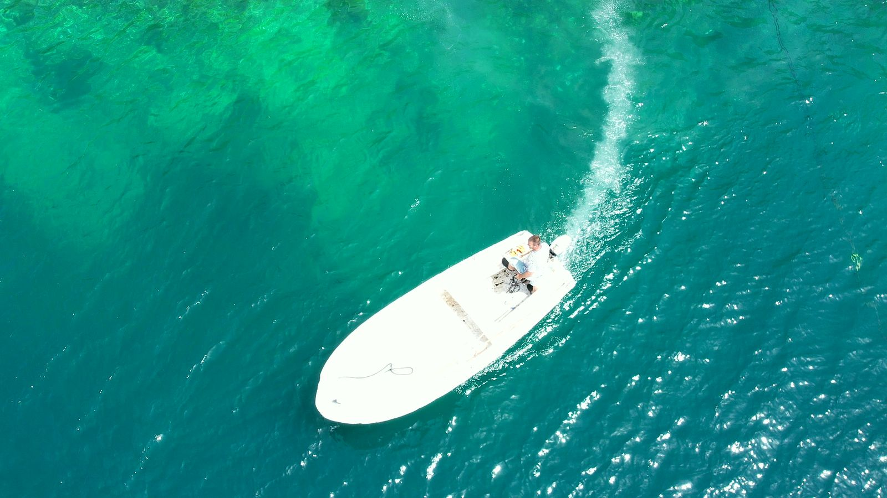
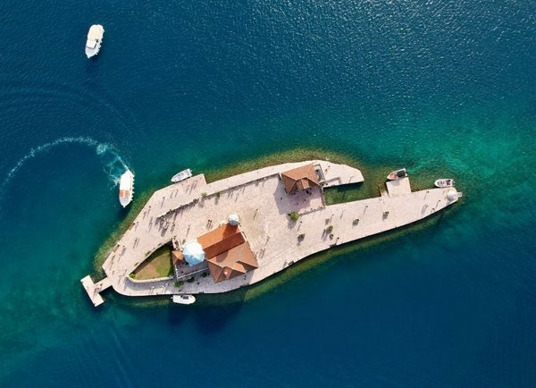
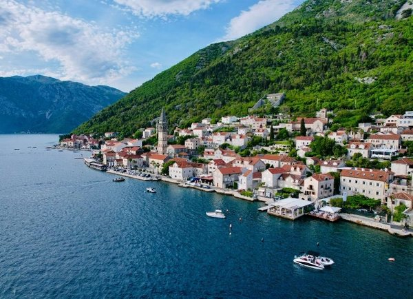

Устрицы, полпорции
6 шт. · Свежие, с нашей фермы
21.00 €Рисан · Пераст · Которский залив
Мидии и устрицы из чистого моря Боки: мы собираем их каждое утро и подаём в нескольких шагах от того места, где они растут.




Наша ферма с высоты
Здесь растут наши мидии и устрицы: на длинных канатах в чистом, спокойном море между Рисаном и Перастом, в нескольких минутах от вашего стола.

Наша история
Boka Seafood начался не на кухне, а в море. Мы выращиваем мидии и устриц на канатах в Которском заливе, где холодные горные источники смешиваются с Адриатикой и дают нашим моллюскам чистый, сладковатый вкус.
Ресторан появился позже, чтобы гости могли попробовать их так, как едим мы сами: прямо из моря, просто приготовленными, с бокалом нашего домашнего вина и видом на весь залив.
Наши
любимые блюда
6 шт. · Свежие, с нашей фермы
21.00 €
1 кг · Отварные, в белом соусе
14.00 €
350–400 г · Целая рыба на гриле
20.00 €
10 шт. · На гриле
17.00 €
300 г · Стейк на гриле
22.00 €С нашего стола
Так выглядит обед у нас: рыба и креветки на гриле, устрицы с нашей фермы и бокал домашнего вина, в шаге от моря.



Семейное приключение
Познакомьтесь с самым юным капитаном Боки! Нашему брату Дражену десять лет, у него есть своя маленькая лодка и огромная любовь к нашей ферме. Когда море спокойное и прозрачное, он отвезёт вас к ферме, чтобы вы увидели ряды мидий и устриц под водой. По пути он расскажет всё, что знает о моллюсках, иногда по учебнику, а иногда в своей собственной версии. Самую профессиональную экскурсию в Боке мы не обещаем, но самую обаятельную гарантируем.
Маленькая лодка, два пассажира и один очень серьёзный капитан.
Когда море прозрачное, канаты с моллюсками видны как на ладони.
Всё, что он знает о мидиях и устрицах, и каждый раз что-то новое.
Вернувшись на берег, попробуйте моллюсков, которых вы только что видели в море.
В копилку Дражена он копит на лодку побольше · не более 2 гостей · по запросу
Капитан Дражен выходит в море, только когда оно спокойное и прозрачное, и когда сделано домашнее задание. Рядом в море всегда находится кто-то из нас. Сообщите нам за день!

Нажмите на фото, чтобы увеличить.
Отзывы гостей
«Самые свежие мидии, которые мы когда-либо ели, а ферму видно прямо со стола. Честные цены за такое качество.»
— Гость, Великобритания
«Столик у самой воды, а перед нами ферма мидий. Устрицы стали лучшим моментом нашей поездки в Черногорию.»
— Гость, Германия
«Простая, честная еда в красивом месте. Килограмм мидий и бокал их домашнего шардоне. Идеально.»
— Гость, Сербия
Свяжитесь с нами
Напишите, когда хотите прийти, и мы проверим, есть ли свободный столик у моря. Мы отвечаем в WhatsApp, обычно в течение нескольких минут. Для групп больше 12 человек лучше позвоните нам.
Как нас найти
Прибрежная дорога между Рисаном и Перастом, Которский залив, Черногория
Около 20 минут на машине от Старого города Котора по дороге вдоль залива, сразу за Перастом.
| 1 апреля – 1 ноября | Ежедневно 11:00 – 20:00 |
|---|---|
| Прогулка с капитаном Драженом | По запросу, в хорошую погоду |
| Оплата | Только наличные |

Рекомендуем
 Sea Rush Tours
Sea Rush Tours
После обеда у нас продолжите день на море! Sea Rush Tours проводит частные и групповые прогулки на катере к острову Госпа-од-Шкрпьела, в Пераст и к Голубой пещере, с остановками для купания в самых красивых бухтах залива. Гости оценивают их на 4,9 на TripAdvisor.
Частные турыГрупповые туры★ 4.9 TripAdvisor

Госпа-од-Шкрпьела
Пераст Голубая пещера
Голубая пещера